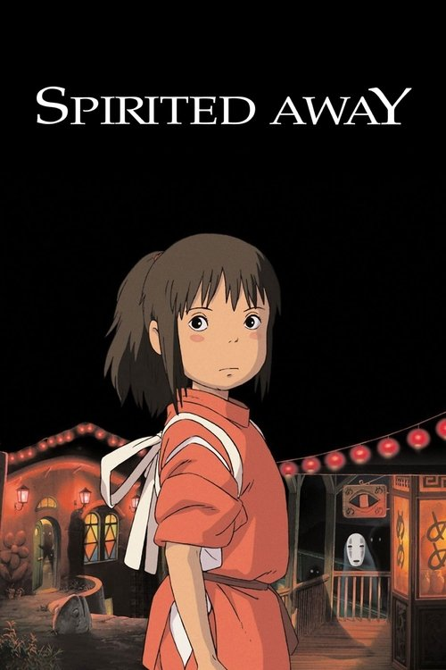

Spirited AwayFilm discussion · Spoiler-free
EL
Ellis2 hours ago · Started this discussion
What makes a world feel this alive?
The little background details are half the magic. Which ones stayed with you?
Interactive mobile mockup · Fictional conversation
Attack on Titan · Through S1 E25
The post and all replies stay hidden until you’re ready. Later episodes don’t belong in this discussion.

The little background details are half the magic. Which ones stayed with you?